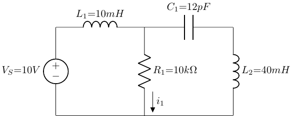

Reactive Components: Capacitors & Inductors
BME253L - Fall 2025
Learning Objectives
Define and describe the behavior of capacitors and inductors in DC and AC circuits.
Analyze circuits with capacitors and inductors in series and parallel.
Understand the concept of reactance and impedance.
Relevant Reading
Practical Electronics for Inventors, 4th Edition by Paul Scherz and Simon Monk:
Chapter 2.23 (Cap Theory)
Chapter 2.24 (Inductor Theory)
Chapter 3.6 (Caps in Circuits)
Chapter 3.7 (Inductors in Circuits)
Reactive Components
To date, we have only considered resistors, which dissipate energy as heat, to consume source power.
Resistive components respond “instantaneously” to changes in voltage and current, as defined by Ohm’s Law.
Reactive components, such as capacitors and inductors, store energy in electric and magnetic fields, respectively.
This storage of energy takes time, so reactive components do not respond instantaneously to changes in voltage and current. This means that circuits with reactive components have transient and steady-state responses to time-varying sources.
Ideal Capacitors
A capacitor is a device that stores energy in an electric field.
Composed of two conductive plates separated by an insulating material (dielectric) that contains dipoles that become polarized in the presence of an electric field.
Permititivity, ε, is a measure of how easily a material can become polarized. (\(\epsilon_{air} = 8.85 \times 10^{-12} \text{ F/m}\))
Charge, Q, is stored on the plates of a capacitor:
Take a finite amount of time to charge/discharge.
Finite capacity to store charge.
Capacitance, C, is the ratio of charge to voltage:
\[ C = \frac{Q}{V} = \frac{\epsilon A}{d} \quad \text{(Farads, F)} \]
Capacitor Voltage-Current Relationship
\[ Q = CV \quad \Rightarrow \quad I = \frac{dQ}{dt} = C\frac{dV}{dt} \]
Capacitors have a “memory” since \(i_c(t)\) depends on the rate of change of the voltage across the capacitor (i.e., how much charge has accumulated for storage over time).
Capacitors are linear elements since differentiation is a linear operation.
Capacitors block DC current in steady-state since \(dV/dt = 0\) for constant voltage.
For a steady-state DC voltage, a capacitor acts like an open circuit.
For a time-varying voltage, an uncharged capacitor acts like a short circuit at the instant the voltage changes.
Capacitor Voltage-Current Temporal Relationship
\[ \int i_c(t) dt = C \int \frac{dV_c(t)}{dt} dt \quad \Rightarrow \quad V_c(t) = V_c(t_0) + \frac{1}{C} \int_{t_0}^{t} i_c(\tau) d\tau \]
The voltage across a capacitor at time \(t\) depends on:
The initial voltage \(V_c(t_0)\), and
The integral of the current over time.
\(t_0\) is the time when the capacitor was last charged or discharged and this new change in current is being evaluated.
Capacitor Internals
Power in a Capacitor
\[ P_c(t) = V_c(t) i_c(t) = V_c(t) C \frac{dV_c(t)}{dt} = \frac{1}{2} C \frac{d}{dt} (V_c(t))^2 \]
Power can be positive or negative, depending on the sign of \(dV_c(t)/dt\).
Positive power means energy is being stored in the capacitor (i.e., charging).
Negative power means energy is being released from the capacitor (i.e., discharging).
Energy in a Capacitor
\[ E_c(t) = \int_{t_0}^{t} P_c(\tau) d\tau = \frac{1}{2} C \int_{t_0}^{t} \frac{d}{dt} V_c^2(t) dt = \frac{1}{2} C (V_c(t))^2 - \frac{1}{2} C (V_c(t_0))^2 \]
Parallel Capacitors
Let’s draw a circuit with multiple capacitors in parallel.
Capacitors in parallel have the same voltage across them.
“Looks” like a single capacitor with larger capacitance (area):
\[ \begin{gather} v_{C_1}(t) = v_{C_2}(t) = v_{C_3}(t) = \ldots = v_{C_n}(t) \\ i_n(t) = C_n \frac{dv_{C_n}(t)}{dt} \\ i(t) = \sum_{n} i_n(t) = \sum_{n} C_n \frac{dv_{C_n}(t)}{dt} = \left( \sum_{n} C_n \right) \frac{dv(t)}{dt} \end{gather} \]
\[ C_{eq} = \sum_{i} C_i \]
- Capacitors in parallel have a similar relationship to resistors in series.
Series Capacitors
Let’s draw a circuit with multiple capacitors in series.
Capacitors in series have the same current through them.
“Looks” like a single capacitor with smaller capacitance (distance):
\[ \begin{gather} i_{C_1}(t) = i_{C_2}(t) = i_{C_3}(t) = \ldots = i_{C_n}(t) \\ v_n(t) = \frac{1}{C_n} \int i_{C_n}(\tau) d\tau \\ v(t) = \sum_{n} v_n(t) = \sum_{n} \frac{1}{C_n} \int i(\tau) d\tau = \left( \sum_{n} \frac{1}{C_n} \right) \int i(\tau) d\tau \end{gather} \]
\[ \frac{1}{C_{eq}} = \sum_{i} \frac{1}{C_i} \]
- Capacitors in series have a similar relationship to resistors in parallel.
Ideal Inductors
An inductor is a device that stores energy in a magnetic field.
Wound coil of wire around a core (air or ferromagnetic material).
Time-varying current through the coil generates a magnetic field that induces a voltage (electromotive force, emf) that opposes changes in current (according to Lenz’s Law).
Magnetic Flux, Φ, is the measure of the strength of the magnetic field
\[ \Phi(t) = k N i_L(t) \quad \text{(Tesla)} \]
Inductance, L, is the ratio of magnetic flux to current:
\[ L = \frac{N \Phi}{i_L} = \frac{k N^2 A}{l} \quad \text{(Henrys, H)} \]
where \(k\) is a constant (permeability) that depends on the core material and geometry.
Faraday’s Law of Induction
A time-varying magnetic flux through a coil induces an electromotive force (emf) (voltage) in the coil proportional to the rate of change of the flux.
\[ v_L(t) = \frac{d\Phi(t)}{dt} = L \frac{di_L(t)}{dt} \]
Note that the voltage across an inductor is proportional to the rate of change of current through it, while the voltage across a capacitor is proportional to the rate of change of voltage across it.
Inductor Voltage-Current Relationship
Inductors have a “memory” since \(v_L(t)\) depends on the rate of change of the current through the inductor (i.e., how much magnetic flux has accumulated for storage over time).
Inductors are linear elements since differentiation is a linear operation.
Inductors act like short circuits in steady-state DC since \(di_L/dt = 0\) for constant current.
Inductors oppose changes in current, and transiently act like open circuits at the instant the current changes.
Inductor Voltage-Current Temporal Relationship
\[ \int v_L(t) dt = L \int \frac{di_L(t)}{dt} dt \quad \Rightarrow \quad i_L(t) = i_L(t_0) + \frac{1}{L} \int_{t_0}^{t} v_L(\tau) d\tau \]
Power in an Inductor
\[ P_L(t) = V_L(t) i_L(t) = L \frac{di_L(t)}{dt} i_L(t) = \frac{1}{2} L \frac{d}{dt} (i_L(t))^2 \]
Power can be positive or negative, depending on the sign of \(di_L(t)/dt\).
Energy in an Inductor
\[ E_L(t) = \int_{t_0}^{t} P_L(\tau) d\tau = \frac{1}{2} L (i_L(t))^2 - \frac{1}{2} L (i_L(t_0))^2 \]
The energy stored in an inductor is always positive.
Parallel Inductors
Let’s draw a circuit with multiple inductors in parallel.
Inductors in parallel have the same voltage across them.
“Looks” like a single inductor with smaller inductance (area):
\[ \begin{gather} v_{L_1}(t) = v_{L_2}(t) = v_{L_3}(t) = \ldots = v_{L_n}(t) \\ i_n(t) = \frac{1}{L_n} \int v_{L_n}(\tau) d\tau \\ \textrm{Using KCL...} \\ i(t) = \sum_{n} i_n(t) = \sum_{n} \frac{1}{L_n} \int v(\tau) d\tau = \left( \sum_{n} \frac{1}{L_n} \right) \int v(t) dt \end{gather} \]
\[ \frac{1}{L_{eq}} = \sum_{i} \frac{1}{L_i} \]
- Inductors in parallel have a similar relationship to resistors in parallel.
Series Inductors
Let’s draw a circuit with multiple inductors in series.
Inductors in series have the same current through them.
“Looks” like a single inductor with larger inductance (length):
\[ \begin{gather} i_{L_1}(t) = i_{L_2}(t) = i_{L_3}(t) = \ldots = i_{L_n}(t) \\ v_n(t) = L_n \frac{di_n(t)}{dt} \\ v(t) = \sum_{n} v_n(t) = \sum_{n} L_n \frac{di(t)}{dt} = \left( \sum_{n} L_n \right) \frac{di(t)}{dt} \end{gather} \]
\[ L_{eq} = \sum_{i} L_i \]
- Inductors in series have a similar relationship to resistors in series.
Steady-State DC Response of Reactive Components
- Capacitors act like open circuits in steady-state DC.
\[ \begin{gather} i_c(t) = C \frac{dV_c(t)}{dt} = 0 \quad \text{for constant } V_c(t) \\ \Rightarrow \quad V_c(t) = \text{constant} \\ \Rightarrow \quad I_c(t) = 0 \end{gather} \]
- Inductors act like short circuits in steady-state DC.
\[ \begin{gather} v_L(t) = L \frac{di_L(t)}{dt} = 0 \quad \text{for constant } i_L(t) \\ \Rightarrow \quad i_L(t) = \text{constant} \\ \Rightarrow \quad V_L(t) = 0 \end{gather} \]
Example
Find \(i_1\) at steady-state DC (long time after the source is turned on).

\[ i_1 = \frac{V_s}{R_1} = \frac{10V}{10k\Omega} = 1 mA \]
How do we do this?